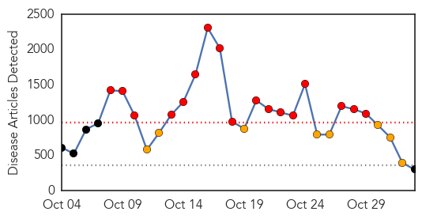
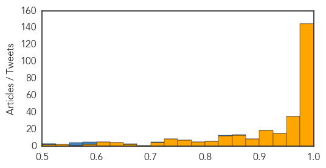
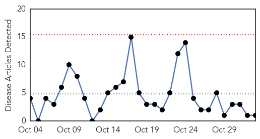
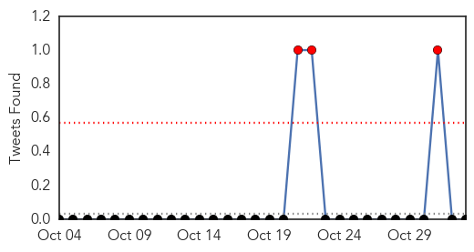

Ebola
30-Day Web Trend
17 alerts, 8 warnings

30-Day Twitter Trend
2 alerts, 16 warnings

Article Locations

Article Confidences
Top Articles:
- 1.000
- Helsinki patient tests negative for Ebola
- 1.000
- US doctor with Ebola improves, nurse reunited with her dog
- 1.000
- Ebola: New York doctor now in stable condition, nurse reunited with dog
- 1.000
- Ebola: UN envoy says response must be sustained
- 1.000
- Fearing Ebola? Doctors advise getting flu shot
- 1.000
- Liberia Ebola 'Progress' Could be Illusory
- 1.000
- New York Doctor With Ebola Improves, Nurse Reunited With Dog
- 1.000
- Fifth Sierra Leone doctor tests positive for Ebola
- 1.000
- Western nations mistreating Ebola ‘heroes’: UK charity
- 1.000
- New York doctor with Ebola improves, hospital says
- 1.000
- WATCH: Public health professor says Ebola is not a threat to students
- 1.000
- Vermonter voluntarily quarantined after trip to West Africa
- 0.999
- Canada restricts visas amid Ebola scare
- 0.999
- Guinea buries Cuban Ebola worker killed by malaria
- 0.999
- Health officials will launch coordinated procedures
- 0.999
- High fever not necessarily Ebola, says ministry
- 0.999
- The Other Side of Ebola: When the Media Causes Doubts and Fear
- 0.999
- NYC doctor with Ebola now in stable condition
- 0.999
- Ebola crisis: Canada visa ban hits West Africa states
- 0.999
- Ebola 'Patient Zero': How outbreak started from single child
- 0.999
- Heartwarming moment nurse cured of Ebola is reunited with her best friend Bentley the dog
- 0.999
- Ebola epidemic spurs hunt for new, faster tests
- 0.999
- The Ebola epidemic
- 0.999
- China Goes Ahead with Its Anti-Ebola Aid -- Beijing Review
- 0.999
- UK sets up three new Ebola Labs in Sierra Leone
- 0.999
- Scientists try to predict number of US Ebola cases
- 0.999
- Amid Ebola scare, Canada restricts visas
- 0.999
- Ebola outbreak in Sierra Leone 'catastrophic'
- 0.999
- Sierra Leone doctor tests positive for Ebola
- 0.999
- Amid Ebola scare, Canada restricts visas
- 0.999
- Ebola Quarantines Ignore Experience and Trample Freedom
- 0.999
- Ebola suspected patient hospitalized in Danang
- 0.999
- Ebola Check: NRIs Follow the Rules
- 0.999
- Sanford designated to treat Ebola
- 0.998
- Liberia traveler at Duke University Hospital currently Ebola free
- 0.998
- NC Patient Monitored for Ebola Tests Negative For Virus
- 0.998
- As Ebola Scare Grows, Canada Restricts Visas
- 0.998
- Ebola is 'not a death sentence,' U.S. cases prove
- 0.998
- NYC Doctor With Ebola Upgraded to Stable Condition
- 0.998
- At worst, 130 Ebola cases in the U.S. by year's end
- 0.998
- Liberia opens Ebola treatment center Republican American
- 0.998
- NYC Doctor With Ebola Shows Signs of Improvement
- 0.998
- Ebola is not finished with USA yet
- 0.998
- You spread more disease than Ebola nurse
- 0.998
- New York Doctor With Ebola in Stable Condition; Dallas Nurse Nina Pham Reunites With Her Dog Bentley
- 0.998
- Scientists try to predict number of US Ebola cases
- 0.998
- Legacy of SARS in Asia offers lessons for Ebola fight across the globe
- 0.998
- Jacksonville hospitals say they are ready for Ebola
- 0.997
- France treats UN aid worker who contracted Ebola in Sierra Leone
- 0.997
- Scientists try to predict total number of U.S. Ebola cases;
Showing top 50 articles...
Top Tweets:
- 0.869
- Mali. Création d'un centre opérationnel d'urgence pour la gestion de la crise31 octobre 2014 ebola EbolaResponse
- 0.844
- Mali. Plan de riposte du Mali pour face à la menace d’épidémie à virus Ebola Ebola ebolaresponse http://t.co/SyDlXaUQOU
- 0.716
- We try to update u as much as we can about Ebola but pls share if u av any news in relation to ebola. Pls educate people about the virus
- 0.668
- AFD Blog `@CDCgov Guidance: Ambulatory Care Evaluation Of Patients With Possible EVD (Ebola Virus Disease)' http://t.co/MLMwKVe5ip
- 0.589
- AFD Blog `French MOH Statement On UN Employee Evacuated From Sierra Leone With Ebola' http://t.co/K2vVbq6wD7
- 0.585
- Morning you all. If you are a Christian and going to church today pls pray for Ebola affected countries. Amen!
- 0.581
- RT: Opinion: You spread more disease than Ebola nurse http://t.co/fZUobbNYBc Africa SierraLeone US Maine MSF
- 0.574
- Map. Regional ETU status to Ebola outbreak in West Africa 31 October 2014 ebolaresponse http://t.co/kJi0yy65oC
- 0.574
- Food security impact of 2014 Ebola epidemic in Guinea Liberia and Sierra Leone ebolaresponse http://t.co/3tuqQNhLSw
- 0.568
- Mali. Ebola virus disease 31 October 2014 ebolaresponse http://t.co/Qy1YFVndLg
- 0.507
- RT: Ebola virus transmission quarantine incubation period immunity and much more on TWiV 309 now up http://t.co/nBrmdCwuZ7
Cholera
30-Day Web Trend
0 alerts, 0 warnings

30-Day Twitter Trend
3 alerts, 0 warnings

Article Locations

Article Confidences

Top Articles:
Top Tweets:
-
No tweets found for Nov 02, 2014